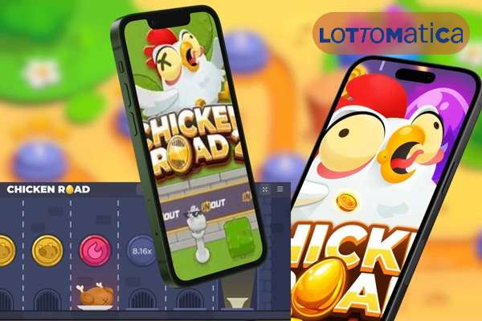
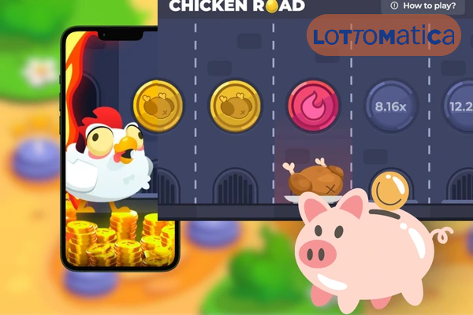
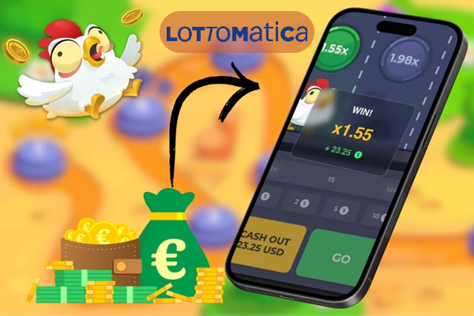

Chicken Road Lottomatica è un crash game arcade che si distingue per la sua semplicità e il suo gameplay interattivo. Ambientato in una fattoria virtuale con grafica vivace e una colonna sonora country, il gioco ti sfida a condurre un pollo attraverso un percorso di botole infuocate, decidendo quando incassare le vincite con il pulsante “Cash Out”. Disponibile su Lottomatica, una piattaforma certificata ADM (Agenzia delle Dogane e dei Monopoli), Chicken Road Lottomatica offre un’esperienza sicura e regolamentata, con bonus esclusivi e un’interfaccia intuitiva per giocatori di ogni livello.
Chicken Road Lottomatica: L’Emozione
Il Chicken Road Lottomatica è uno dei giochi da casinò online più innovativi e coinvolgenti del 2025, un crash game arcade che ha conquistato i giocatori italiani grazie al suo gameplay unico e alla piattaforma affidabile di Lottomatica. Sviluppato da InOut Games, Chicken Road Lottomatica invita i giocatori a guidare un simpatico pollo attraverso un percorso pieno di insidie, con l’obiettivo di accumulare moltiplicatori e vincere premi fino a 20.000€.
Introduzione al Fascino di Chicken Road Lottomatica

In questo articolo, analizzeremo le caratteristiche principali di Chicken Road Lottomatica, i vantaggi di giocare su questa piattaforma, le strategie per ottimizzare le tue possibilità di vincita e come accedere al gioco tramite l’app ufficiale Lottomatica. Includeremo una tabella informativa e una sezione FAQ per rispondere a tutte le tue domande su Chicken Road Lottomatica.
Perché Scegliere Chicken Road Lottomatica
Chicken Road Lottomatica si distingue per la sua immediatezza e il suo gameplay dinamico, rendendolo una scelta popolare tra i giocatori italiani. Con la sicurezza garantita da Lottomatica e bonus allettanti, questo gioco offre un’esperienza di gioco premium. Ecco perché dovresti provare Chicken Road Lottomatica.

Sicurezza e Affidabilità di Lottomatica
Lottomatica è una delle piattaforme di gioco più rispettate in Italia, con una licenza ADM che garantisce transazioni sicure e un ambiente di gioco regolamentato. Chicken Road Lottomatica è supportato da un’interfaccia user-friendly e da un servizio clienti disponibile 24/7 tramite chat, telefono o email. Inoltre, il gioco utilizza la tecnologia Provably Fair, certificata da iTech Labs, per garantire risultati trasparenti e non manipolabili.
Bonus e Promozioni Esclusive
Lottomatica offre promozioni irresistibili per Chicken Road Lottomatica, tra cui un bonus di benvenuto fino a 500€, 30 giri gratuiti e cashback settimanali. Queste offerte aumentano il tuo bankroll, permettendoti di giocare più a lungo e di esplorare il gioco con meno rischi. Controlla regolarmente la sezione promozioni di Lottomatica per scoprire le ultime offerte dedicate a Chicken Road Lottomatica.
Caratteristiche Principali di Chicken Road Lottomatica
Chicken Road Lottomatica combina un RTP del 94.25% con una struttura di gioco flessibile che permette di regolare la volatilità attraverso quattro livelli di difficoltà: Facile, Medio, Difficile e Hardcore. Con una vincita massima potenziale di x3,203,384.8, il gioco è un’opzione allettante per chi cerca premi significativi. Di seguito, analizziamo le sue caratteristiche principali.

Meccaniche di Gioco
In Chicken Road Lottomatica, scommetti un importo tra 0,01€ e 200€ e guidi un pollo attraverso un percorso di botole. Ogni passo sicuro aumenta il moltiplicatore, ma una botola infuocata termina il gioco. Puoi scegliere tra quattro livelli di difficoltà: Facile (24 botole, bassa volatilità), Medio (22 botole), Difficile (20 botole) e Hardcore (18 botole, alta volatilità). Il pulsante “Cash Out” ti permette di incassare le vincite in qualsiasi momento, rendendo Chicken Road Lottomatica un gioco di strategia e tempismo.
Tecnologia Provably Fair
Chicken Road Lottomatica utilizza la tecnologia Provably Fair, basata su blockchain, per garantire risultati trasparenti e non manipolabili. Dopo ogni partita, puoi verificare l’esito nella sezione “My Bet History” cliccando sul pulsante verde dello scudo. Questo sistema, combinato con la sicurezza TLS 1.2 di Lottomatica, rende il gioco uno dei più affidabili disponibili, offrendo totale trasparenza ai giocatori.
Come Giocare a Chicken Road Lottomatica
Iniziare a giocare a Chicken Road Lottomatica è semplice, ma comprendere le sue meccaniche può aiutarti a prendere decisioni più informate. Ecco una guida passo-passo per immergerti nel gioco e alcuni suggerimenti utili.
Impostazione della Scommessa
Per iniziare con Chicken Road Lottomatica, accedi al sito ufficiale Lottomatica.it o scarica l’app Lottomatica per iOS o Android. Registrati (età minima 18 anni) o effettua il login, ricarica il tuo saldo con metodi come Visa, Mastercard, Skrill, Neteller, PayPal o bonifico bancario, e cerca “Chicken Road” nella libreria dei giochi. Imposta la tua scommessa (da 0,01€ a 200€) utilizzando i pulsanti “+” e “-” o selezionando importi predefiniti (1€, 2€, 5€, 10€). Scegli il livello di difficoltà e premi “Play” per far avanzare il pollo.
Gestione del Cash Out
La chiave del successo in Chicken Road Lottomatica è sapere quando incassare. Dopo ogni passo sicuro, il moltiplicatore aumenta (ad esempio, x1.02, x1.2, x1.5), ma il rischio di una botola infuocata cresce. Premi il pulsante “Cash Out” per bloccare le tue vincite o continua a rischiare per moltiplicatori più alti. La decisione dipende dalla tua tolleranza al rischio e dal livello di difficoltà scelto.
Strategie per Chicken Road Lottomatica
Anche se Chicken Road Lottomatica è un gioco di fortuna, alcune strategie possono aiutarti a ottimizzare la tua esperienza e migliorare le tue possibilità di vincita. Ecco alcuni consigli pratici.
Prova la Modalità Demo
Chicken Road Lottomatica offre una modalità demo gratuita, disponibile su Lottomatica.it e chicken-road.net, perfetta per testare il gioco senza rischi. Usa la demo per sperimentare i diversi livelli di difficoltà e strategie di “Cash Out” senza spendere denaro reale. È un ottimo modo per prepararti al gioco con denaro reale.
Scegliere il Livello di Difficoltà Giusto
Chicken Road Lottomatica offre quattro livelli di difficoltà, ciascuno con un diverso equilibrio tra rischio e ricompensa. Inizia con il livello Facile (96% di probabilità di successo per passo) per sessioni più sicure, poi passa a Difficile o Hardcore per moltiplicatori più alti, fino a x3,203,384.8. Scegli in base al tuo bankroll e alla tua propensione al rischio.
Gestione del Bankroll
La gestione del budget è cruciale in Chicken Road Lottomatica. Imposta un bankroll chiaro e scommetti solo una piccola percentuale (ad esempio, lo 0,01%) per ogni partita. Con un bankroll di 100€, considera scommesse di 0,01€-0,50€ per prolungare il tempo di gioco e aumentare le possibilità di vincite significative.
Sfruttare i Bonus di Lottomatica
Lottomatica offre promozioni specifiche per Chicken Road Lottomatica, come un bonus di benvenuto del 100% fino a 500€ e 30 giri gratuiti. Usa questi bonus per aumentare il tuo bankroll e giocare più a lungo senza intaccare i tuoi fondi. Controlla i termini e le condizioni per massimizzare queste offerte.
Tabella Informativa: Caratteristiche di Chicken Road Lottomatica
|
Caratteristica |
Dettagli |
|
Nome del Gioco |
Chicken Road |
|
Sviluppatore |
InOut Games |
|
Tipologia |
Crash Game Arcade |
|
RTP |
94.25% (varia in base al livello di difficoltà) |
|
Volatilità |
Media-Alta (regolabile: Facile, Medio, Difficile, Hardcore) |
|
Scommessa Minima/Massima |
0,01€ - 200€ |
|
Vincita Massima |
x3,203,384.8 (livello Hardcore, soggetta a limiti del casinò) |
|
Funzionalità Speciali |
Cash Out, Provably Fair, scelta del livello di difficoltà |
|
Disponibilità Demo |
Sì, su Lottomatica.it e chicken-road.net |
|
Piattaforme Supportate |
Android, iOS, browser (HTML5, senza download) |
Questa tabella riassume le caratteristiche principali di Chicken Road Lottomatica, offrendo una panoramica chiara per i giocatori italiani.
FAQ su Chicken Road Lottomatica
Chicken Road Lottomatica è un crash game arcade disponibile su Lottomatica Casino, sviluppato da InOut Games. I giocatori guidano un pollo attraverso un percorso di botole, incassando vincite con moltiplicatori crescenti tramite il pulsante “Cash Out”. Ha un RTP del 94.25% e una vincita massima di x3,203,384.8.
Per giocare a Chicken Road Lottomatica, registrati su Lottomatica.it o tramite l’app Lottomatica, ricarica il tuo saldo, cerca “Chicken Road” nella libreria dei giochi, imposta una scommessa (0,01€-200€), scegli il livello di difficoltà e premi “Play”. Usa il pulsante “Cash Out” per incassare le vincite.
Sì, Chicken Road Lottomatica offre una modalità demo gratuita su Lottomatica.it e chicken-road.net, senza bisogno di registrazione o deposito. È perfetta per testare il gioco senza rischi.
Sì, Chicken Road Lottomatica è sicuro, grazie alla licenza ADM di Lottomatica e alla tecnologia Provably Fair, che garantisce risultati trasparenti e non manipolabili. Lottomatica supporta metodi di pagamento sicuri e verifica KYC per i prelievi.
Chicken Road Lottomatica offre quattro livelli: Facile (24 botole, x1.02-x24.5), Medio (22 botole), Difficile (20 botole) e Hardcore (18 botole, fino a x3,203,384.8). Ogni livello regola il rischio e il potenziale di vincita.
Lottomatica offre un bonus di benvenuto del 100% fino a 500€, 30 giri gratuiti e cashback settimanali per Chicken Road Lottomatica. Controlla la sezione promozioni per offerte aggiornate.
Conclusione: Perché Scegliere Chicken Road Lottomatica
Chicken Road Lottomatica offre un’esperienza di gioco unica che unisce semplicità, strategia e adrenalina. Con un RTP del 94.25%, la tecnologia Provably Fair e la possibilità di scegliere tra quattro livelli di difficoltà, il gioco è perfetto per i giocatori italiani che cercano un’esperienza coinvolgente e potenzialmente redditizia. La piattaforma Lottomatica garantisce sicurezza, bonus generosi e un’esperienza ottimizzata per dispositivi mobili, rendendo Chicken Road Lottomatica una scelta ideale sia per i principianti che per i giocatori esperti.
Per ottenere il massimo da Chicken Road Lottomatica, ti consigliamo di iniziare con la modalità demo per familiarizzare con le meccaniche, scegliere un livello di difficoltà adatto e sfruttare i bonus di Lottomatica per aumentare il tuo bankroll. Con la sua grafica vivace e il gameplay dinamico, Chicken Road Lottomatica è destinato a rimanere una scelta popolare tra i giocatori italiani. Registrati oggi su Lottomatica Casino e guida il tuo pollo verso l’uovo d’oro